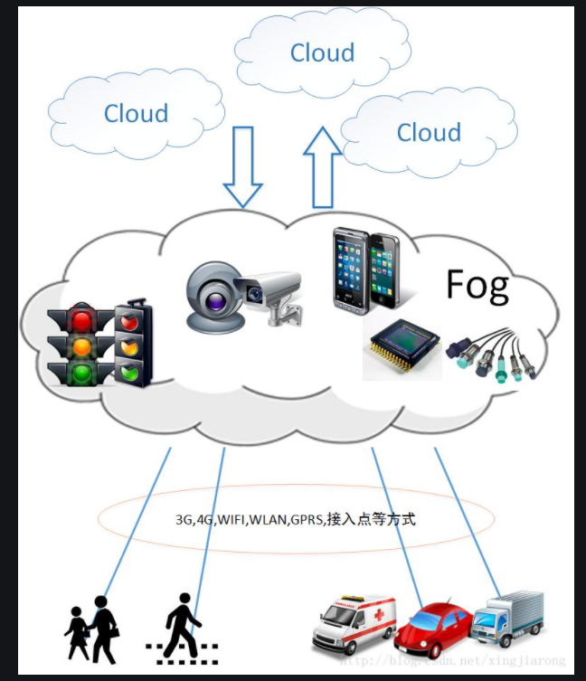
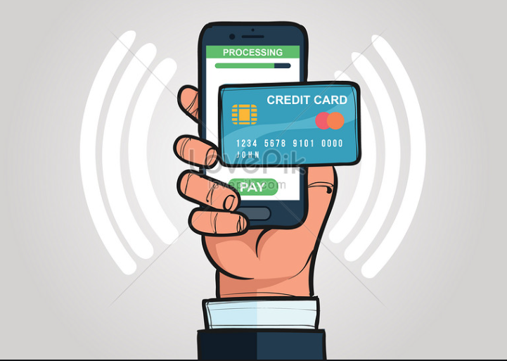

< DOCTYPE html>
Mobile Computing
* Mobile Computing Applications:-
1. Traffic:
During traveling in traffic if we require to know road situation, latest news and
when if feel more stress in driving then can play music and other important broadcast
data are received through digital audio broadcasting(DAB). If we forget the road then
we can know our exact location with the help of global positioning system (GPS).In
case if got accident then can to inform police and ambulance via an emergency call to
the service provider, which help to improve organization and save time & money.
2. Emergencies Situation:
To play a vital role in the medical sector can hire an ambulance with great quality
wireless connection and help of this can carry significant information about injured
persons. The useful step can prepare for a particular accident and doctor can be
consulted for diagnosis. Only Wireless networks work of communication in nature
disaster 2 such as earthquakes, tsunami, flood, and fire. In worst conditions only
decentralized, wireless ad-hoc networks survive. Means that can handle Emergencies
situation by mobile computing easily

3. Use in Business:
As per business point of view CEO help of this computing system can represent
the presentation at the front of their clients while can access hot news of the market.
Help of video conference could be discuss at the topic without hindrance any time.
25
Another side if traveling salesman wants to access the company database as per
requirement then can be retrieved data on his wireless device and maintain the
consistency company E database. Cause of these every employee are updated up to data
4. Credit Card Verification:
Credit card verification using this computing most secure. In respect of Sale
terminals(POS) when customer buy items in malls and other small shops when and
pay bill in the form of swap credit card for transactions then need to establish network
in between POS terminal and bank central computer then over protected cellular
network verify the credential information of card fastly, if match it then proceed
further otherwise denied get boost up speed of transaction process and relieve the
burden at the POS network.

5. Replacement of Fixed Networks:
Wired network has been replaced in wireless network e.g. trade shows, remote
sensors and historical buildings. in wired networks, weather forecasting, earthquake
detection and to get environmental data are impossible. This is possible only in
adapting the replacement of fixed networks in this computing.
6. Infotainment:
Wireless networks are capable to deliver the latest information at any suitable
regions and can download knowledge about concert at morning through wireless
network that concert is conducting in any region as well as Another growing field of
wireless network applications lies in entertainment and games to enable, e.g., ad-hoc
gaming networks as soon as people meet to play together. So Infotainment by wireless
computing is more easy.
* Characteristics of Mobile computing:-
1. Portability
- The Ability to move a device within a learning environment or to
different environments with ease.
2. Social Interactivity
- The ability to share data and collaboration between
users.
3. Context Sensitivity
- The ability to gather and respond to real or simulated
data unique to a current location, environment, or time.
4. Connectivity
- The ability to be digitally connected for the purpose of
communication of data in any environment.
5. Individual
- The ability to use the technology to provide scaffolding on
difficult activities and lesson customization for individual learners.
6. Small Size
- Mobile devices are also known as handhelds, palmtops and smart
phones due to their roughly phone-like dimensions. A typical mobile device
will fit in the average adult's hand or pocket. Some mobile devices may fold or
slide from a compact, portable mode to a slightly larger size, revealing built-in
keyboards or larger screens. Mobile devices make use of touch screens and
small keypads to receive input, maintaining their small size and independence
from external interface devices. The standard form of a mobile device allows
the user to operate it with one hand, holding the device in the palm or fingers
while executing its functions with the thumb.
26
Netbooks and small tablet computers are sometimes mistaken for true mobile
devices, based on their similarity in form and function, but if the device's size
prohibits one-handed operation or hinders portability, then it cannot be considered
a true mobile device.
7. Wireless Communication
- Mobile devices are typically capable of
communication with other similar devices, with stationary computers and
systems, with networks and portable phones. Base mobile devices are capable
of accessing the Internet through Bluetooth or Wi-Fi networks, and many
models are equipped to access cell phone and wireless data networks as well.
Email and texting are standard ways of communicating with mobile devices,
although many are also capable of telephony, and some specialized mobile
devices, such as RFID and barcode.